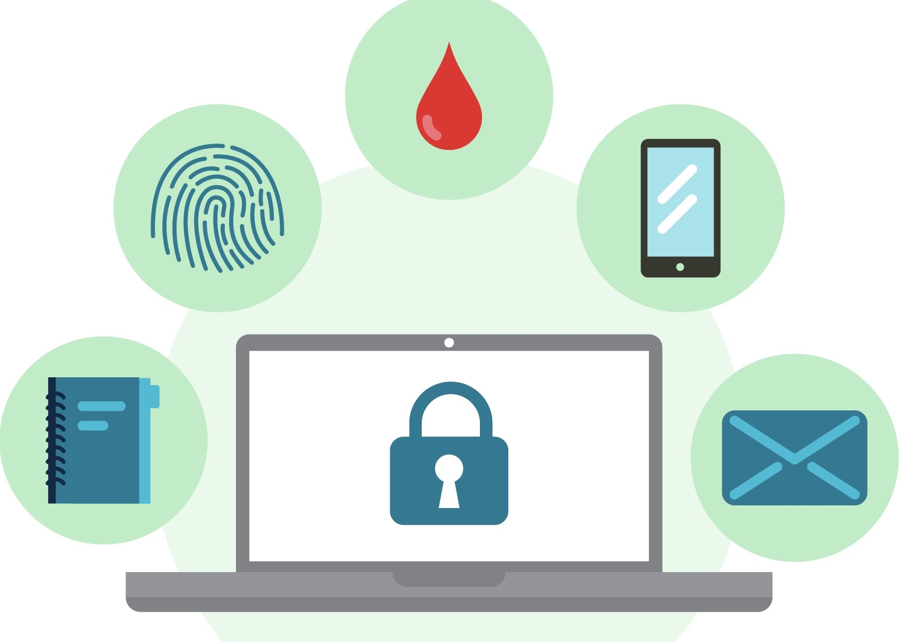

Tryggingstiltak eller personvern - må me velgje?

For mange kan det opplevast som tungvindt eller gammaldags å vere trygg på nettet. For eksempel kan det vere ufunksjonelt å lage eit langt passord med store og små bokstavar, som det kan vere freistande å skrive ned på ein lapp.
Det er svært viktig med personvern for den enkelte. Det vil seie at våre personlege data skal ha vern.
Edward Snowden
Eit døme på hemmelege opplysningar som har vorte spreidd, er då den amerikanske IT- tekninaren Edward Snowden avslørte gradert informasjon frå etteretningstjenesta i USA. Informasjonen gjekk ut på at etteretningstjenesta hadde samarbeida med amerikanske internettselskapar for å kunne overvåke datatrafikken til folket. Lekkasjen vert ansett som verdens største i amerikansk etterretning.
Det er delte meiningar om det Snowden gjorde. Nokre meiner han er ei forrædar, mens andre meiner han har skapt ein meir offentleg debatt om forholdet menneskerettane og personvernet vårt.